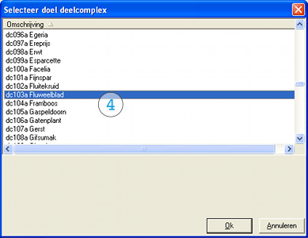

Kopieer een deelcomplex inclusief condiemeting
Introductie
Er kunnen verschillende aanleidingen zijn om een deelcomplex te kopieren of te verwijderen. Door kopieren en verwijderen te combineren, kun je een deelcomplex verplaatsen. De aanleiding kan een wijziging in de bezitssamenstelling zijn. Het kan ook zijn dat er sprake is van meerdere deelcomplexen die vijwel identiek zijn. Een kopie is dan de snelste methode om de compexgegevens in te voeren.
Het is voor deze instructie nodig dat de gebruiker voldoende rechten heeft om de complexgegevens te bewerken (vastgoedbeheerder). We doorlopen achtereenvolgens de volgende stappen:
- Kopieer een deelcomplex
- Kopieer de bijbehorende conditiemetingen (optioneel).
- Verwijder het bestaande deelcomplex (optioneel).
Elk van deze stappen kan ook los van de andere worden uitgevoerd als de situatie daarom vraagt.
Stap 1: Kopieer een deelcomplex
Complexgegevens: Complex > Bewerken
Selecteer het broncomplex en vervolgens het te kopieren deelcomplex 1 en kies [Kopieer deelcomplex] 2.
Er volgt nu een dialoogscherm waarin het doelcomplex 3 dient te worden gekozen.
Het is mogelijk om naar een ander doelcomplex te kopieren of om het deelcomplex te dupliceren in zijn oorspronkelijke complex.
In een tweede dialoogscherm kunnen selecties worden gemaakt 4 om de hoeveelheden aan te passen.
Met de standaard instellingen wordt een 1 op 1 kopie gemaakt van het bron-deelcompex. Het is ook mogelijk om de hoeveelheden bijvoorbeeld te verdubbelen middels een rekenfactor. In een laatste dialoogscherm (niet getoond) dien je de code en naam van het doel-deelcomplex in te voeren. Deze dienen uniek te zijn.
Je hebt nu een kopie gemaakt met eventueel aangepast hoeveelheden. Het bron-deelcomplex is blijven bestaan en er zijn nog geen conditiemetingen meegekopieerd.
Stap 2: Kopieer de bijbehorende conditiemetingen
Het doel-deelcomplex van de vorige stap zal na het kopieren alleen beschikken over de complexgegevens en niet over conditiemeting of scenario’s. Het is mogelijk om bestaande conditiemetingen van het bron=deelcomplex te kopieren, teneinde ook hierover te beschikken.
Conditiemeting: Conditiemeting > Bewerken
Selecteer het complex, bron-deelcompex en de (meest recente) opdracht 1.
Zorg dat de conditiemeting geslecteerd is 2 en kies [Kopieer] 3.
Er volgt nu een dialoogscherm waarin het doel-deelcomplex kan worden gekozen 4.
Kies hier het deelcomplex dat je in de vorige stap heb aangemaakt als kopie van het bron-deelcomplex.

Controleer of het doel-deelcomplex nu inderdaad beschikt over een conditiemeting. De datum hiervan komt overeen met de datum van de bron-conditiemeting.
Indien nodig kun je deze stappen herhalen om ook andere conditiemetingen te kopieren. Uiteraard worden alleen gebreken gekopieerd als de bijbehorende delen zowel in het bron als het doel-deelcomplex voorkomen.
Stap 3: Verwijder het bestaande deelcomplex
Mogelijk was het niet zozeer de bedoeling om een deelcomplex te kopieren, maar om deze te verplaatsen. Hiertoe kun je nadat de voorgaande stappen zijn doorlopen het bron-deelcomplex verwijderen. Het is daarbij wel van belang dat verschillende objecten in de juiste volgorde worden verwijderd.
Let op: als niet de juiste volgorde aangehouden wordt, zal Stravis vanwege de onderlinge afhankelijkheden een foutmelding geven. Als het bron-deelcomplex deel uitmaakt van een of meer bevroren MJOB's zal het niet mogelijk zijn om deze te verwijderen.
A: Haal de scenario’s van het deelcomplex uit de MJOB:
Scenario & MJOB: MJOB > Werkblad
Selecteer iedere MJOB waar het deelcomplex in opgenomen is en ga naar tabblad Activeren om de scenario’s eruit te halen.
B: Verwijder alle scenario’s van het betreffende deelcomplex:
Scenario & MJOB: Scenario > Overzichtslijst
Selecteer alle scenario’s van het betreffende deelcomplex en kies Verwijderen [Massaal]
C: Verwijder alle conditiemetingen van het betreffende deelcomplex:
Conditiemeting: Conditiemeting > Bewerken
Kies het juiste deelcomplex en verwijder voor alle opdrachten de aangemaakt conditiemetingen.
D: Verwijder het betreffende deelcomplex zelf:
Complexgegevens: Complex > Bewerken
Kies het complex en vervolgens het deelcomplex. Verwijder dit met de knop [Verwijderen]
Als in een van deze stappen bij het verwijderen een foutmelding volgt ( “er bestaan referenties naar het te verwijderen object”), dan is dat een indicatie dat de voorgaande stap niet volledig is uitgevoerd.